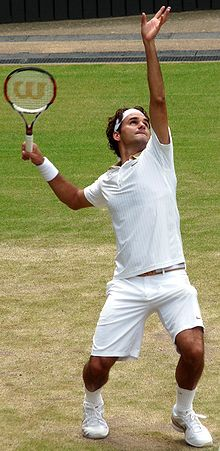
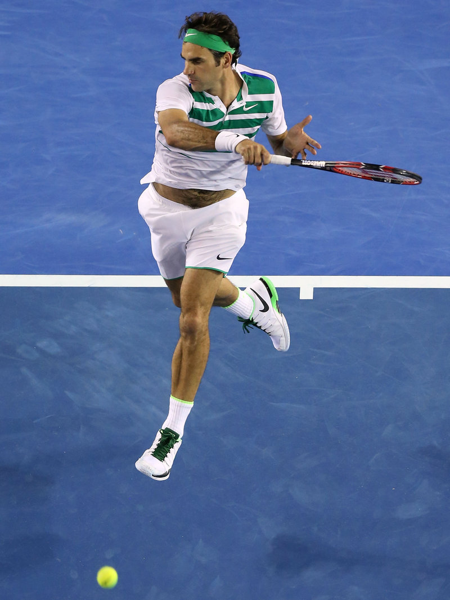
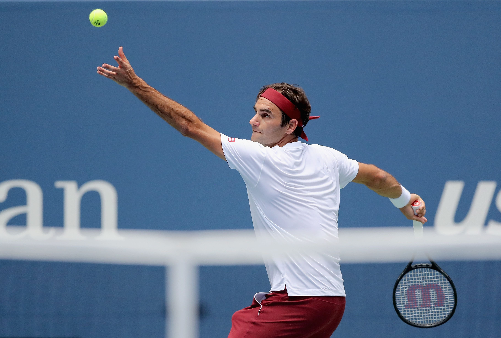
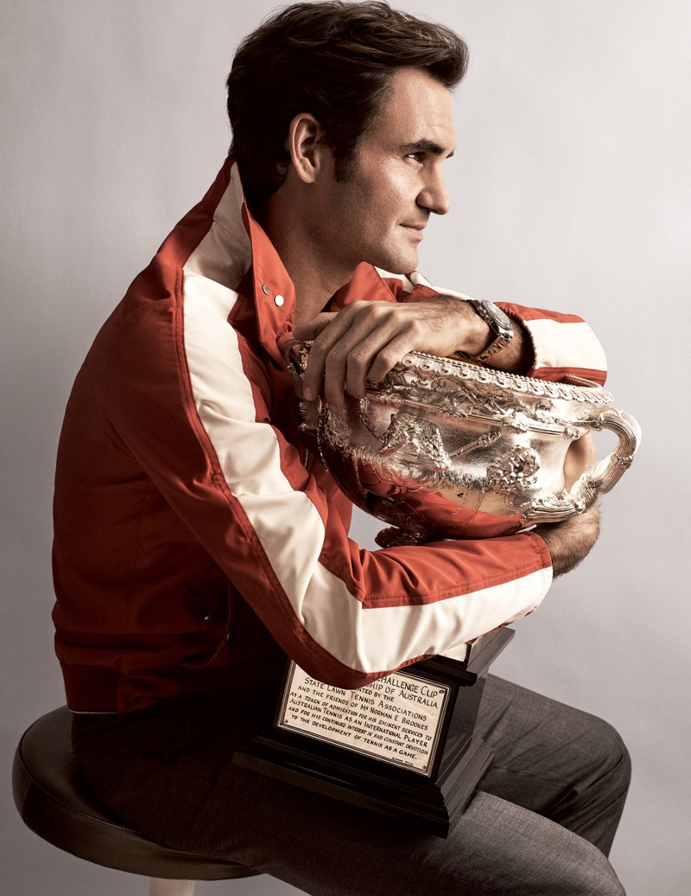

Federer has won a record eight Wimbledon titles, a joint-record six Australian Open titles, a record five consecutive US Open titles, and one French Open title. He is one of eight men to have achieved a career Grand Slam. Federer has reached a record 30 men's singles Grand Slam finals, including 10 in a row from the 2005 Wimbledon Championships to the 2007 US Open. Federer has also won a record six ATP Finals, 27 ATP World Tour Masters 1000 titles, and a record 20 ATP World Tour 500 titles, which he shares with Rafael Nadal..    
Federer was born in Basel, Switzerland.His father, Robert Federer, is a Swiss-German from Berneck in the Canton of St. Gallen, and his mother, Lynette Federer (née Durand), is an Afrikaner from Kempton Park, Gauteng, in South Africa. Federer has one sibling, his older sister, Diana, who is the mother of a set of twins. Since his mother is South African, he holds both Swiss and South African citizenship. He grew up in nearby Birsfelden, Riehen, and then Münchenstein, close to the French and German borders, and he speaks Swiss German, Standard German, English and French fluently, as well as functional Italian and Swedish; Swiss German is his native language. Federer served as a ball boy at his hometown Basel tournament, the Swiss Indoors, in 1992 and 1993. Federer's signature Like all male Swiss citizens, Federer was subject to compulsory military service in the Swiss Armed Forces. However, in 2003 he was ruled "unsuitable" and was subsequently not required to fulfill his military obligation. Instead, he served in the civil protection force and was required to pay 3% of his taxable income as an alternative. He grew up supporting F.C. Basel and the Swiss national football team.[14] Federer also credits his hand-eye coordination to the wide range of sports he played as a child, including badminton and basketball.
NOVAK DJOKOVIC VS ROGER FEDERER - CINCINNATI 2018 FINAL 19/08/18
| Rank | Player | Points |
|---|---|---|
| 1 | R.Nadal | 8260 |
| 2 | R.Federer | 6900 |
| 3 | N.Djokovic | 6455 |
| 4 | J.del Potro | 6130 |
| 5 | A.Zverev | 4755 |
| 6 | M.Cilic | 4535 |